REBEL PRINCESS · DELUXE
프린세스의 반란
디럭스
왕자의 프러포즈를 피해,
자유로운 공주로 남아 보세요.
모두 한 장씩 낸 카드를 한 사람이 가져가는 트릭 테이킹 게임이에요. 카드 묶음을 이겨 가져갈수록 벌점도 함께 따라올 수 있어요.
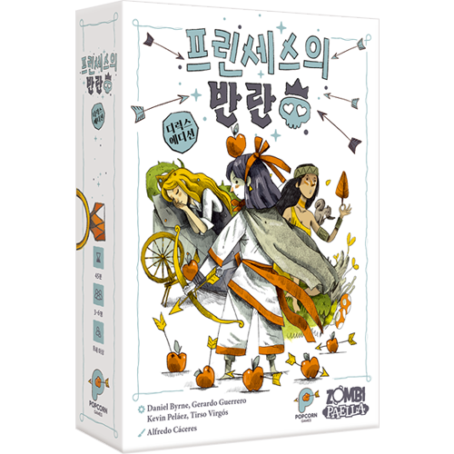
5라운드의 누적 점수가 가장 낮으면 승리. 기본적으로 왕자는 +1점, 개구리는 +5점이에요.
01. 네 종류의 숫자 카드로 파티를 열어요.
여왕·왕자·요정·동물 친구, 네 종류가 각각 1~12까지 있어요. 숫자 카드는 총 48장이지만 참가 인원에 따라 일부를 빼요. 각자 맡는 공주 카드와 매 라운드 규칙을 바꾸는 라운드 카드는 별도예요.
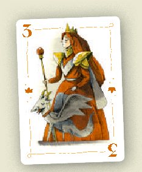
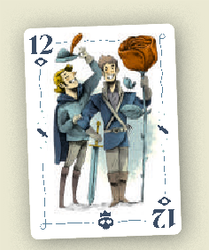
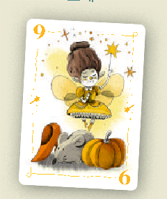
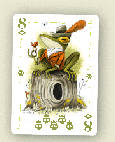
동물 친구의 8은 개구리로 변한 왕자여서 벌점이 커요. 하지만 카드를 낼 때의 종류는 여전히 동물 친구예요. 왕자 종류 카드처럼 취급하지 않아요.
트릭이란? 모두가 한 장씩 내서 만들어진 한 묶음이에요. 그 묶음을 이긴 사람이 카드 전부를 가져가고, 다음 트릭을 먼저 시작해요. 자기 차례에는 반드시 한 장을 내며 패스하지 않아요.
02. 인원에 맞춰 카드를 준비해요.
| 인원 | 각 종류에서 빼는 숫자 | 사용 카드 | 한 사람당 |
|---|---|---|---|
| 3인 | 1, 11, 12 | 36장 | 12장 |
| 4인 | 11, 12 | 40장 | 10장 |
| 5인 | 11, 12 | 40장 | 8장 |
| 6인 | 없음 | 48장 | 8장 |
- 공주 선택: 공주 카드를 섞어 각자 2장씩 받아요. 동시에 한 장을 골라 공개하고, 나머지는 치워요. 선택한 공주는 이번 게임 동안 내 능력이에요.
- 숫자 카드 배분: 인원별 제거 카드를 뺀 뒤 모두 섞어 같은 수로 나눠요. 무작위로 한 명이 카드를 나누고 그 왼쪽 사람이 첫 라운드를 시작해요.
- 라운드 카드 5장: 원하는 카드 또는 무작위 카드 다섯 장을 순서대로 뒷면으로 놓아요. 검은 모래시계 표시는 마지막 라운드에 쓰는 것을 권장해요. 처음에는 a·b·c·d·e로 진행해 봐요.
- 점수 기록지를 준비하고 첫 라운드 카드를 공개해요. 효과를 읽고 카드에 표시된 교환 장수와 방향대로 손패를 넘겨요.
카드 교환은 모두 동시에 해요.
받은 카드를 먼저 본 다음 줄 카드를 고르면 안 돼요. 각자 줄 카드를 먼저 정해 뒷면으로 내려놓고 동시에 전달해요. 라운드마다 아래 화살표의 방향과 숫자가 달라요.
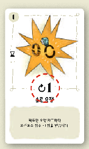
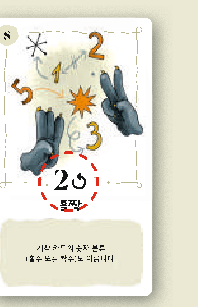
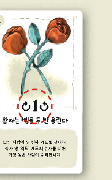
03. 숫자보다 먼저 ‘리드 종류’를 봐요.
- 시작 플레이어가 한 장을 앞면으로 내요. 그 카드의 종류가 이번 트릭의 리드예요.
- 시계 방향으로 한 장씩 내요. 리드 종류가 손에 있다면 반드시 그 종류를 내야 해요.
- 리드 종류가 하나도 없다면 프리예요. 다른 종류를 원하는 대로 낼 수 있어요.
- 모두 냈다면 리드 종류 중 가장 큰 숫자를 낸 사람이 이겨서 모든 카드를 가져가요. 가져온 묶음은 자기 앞에 뒷면으로 두고 라운드가 끝날 때까지 다시 보지 않아요.
아래는 6인 게임에서 기본 규칙으로 진행하는 예시예요.
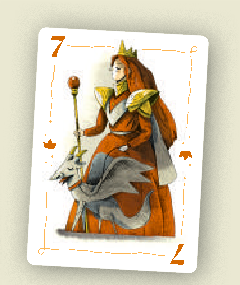
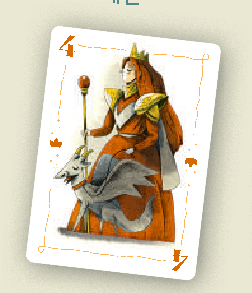
여왕 3으로 시작했다면 리드는 여왕이에요. 여왕 7이 왕자 12, 요정 9, 개구리 8보다 이겨요. 여왕 7을 낸 사람은 여섯 장 모두를 가져가서 왕자 +1점과 개구리 +5점, 합계 6점을 받고 다음 트릭을 시작해요.
왕자는 처음부터 먼저 낼 수 없어요.
아직 왕자가 파티에 들어오지 않았다면 왕자로 트릭을 시작할 수 없어요. 누군가 리드가 없어 프리로 왕자를 내면 왕자가 들어온 것이고, 그 뒤부터 왕자 리드가 가능해요. 시작자의 손에 왕자만 남은 경우는 예외예요.
개구리는 동물 친구라서 이 제한과 상관없이 리드할 수 있어요. 공주 능력이나 라운드 카드가 왕자를 강제로 내게 하는 경우에는 해당 효과의 예외 설명을 따라요.
04. 벌점은 피하고, 모두 모았다면 반란!
기본 점수는 가져온 왕자 한 장당 +1점, 개구리 한 장은 +5점이에요. 다른 카드는 0점이지만, 라운드 카드가 점수 계산법을 바꿀 수 있어요. 카드 아래의 작은 벌점 문양도 참고해요.
파티 여왕의 반란 · -10점
이번 게임에서 사용 중인 모든 왕자 카드와 개구리를 한 사람이 모으면 반란을 선언할 수 있어요. 그 사람은 그 라운드에 일반 점수 대신 -10점을 받아요. 자기 점수를 더하거나 빼는 다른 효과도 무시해요.
다른 사람은 여전히 그 라운드 카드의 점수 효과를 적용해요. ‘결혼 선물’ 라운드처럼 반란을 금지하는 카드도 있어요.
6인 기본 라운드: 왕자 12장 + 개구리를 전부 가져왔다면 보통 17점이지만, 반란을 선언하면 -10점이에요. 3~5인 게임도 제거하고 남은 왕자를 전부 모으면 돼요.
라운드가 끝나면
- 가져온 카드로 그 라운드 점수를 계산해 기록해요.
- 숫자 카드를 다시 섞어 인원에 맞게 나눠요. 사용한 공주 능력은 앞면으로 돌려 다시 준비해요.
- 다음 라운드 카드를 공개해 읽고, 지시된 카드 교환을 해요.
- 현재 누적 점수가 가장 높은 사람이 새 라운드의 시작자예요. 동점이면 지난 라운드 시작자에서 시계 방향으로 더 가까운 동점자가 먼저 해요.
5라운드가 끝나면
누적 점수가 가장 낮은 사람이 승리해요. 동점이면 0점 이하를 받은 라운드가 더 많은 사람이 이겨요. 그래도 같다면 무작위 검은 모래시계 라운드를 한 번 더 진행해요. 이때 이전 동점자 이외의 사람이 최종 승자가 될 수도 있어요.
05. 공주 12종 · 능력과 사용 시점
능력은 한 라운드에 한 번 선택해서 써요. 사용을 선언하고 효과를 읽은 뒤 공주 카드를 뒷면으로 뒤집어요. 다음 라운드에 다시 사용할 수 있어요. 처음 배우는 판은 공주 능력 없이 진행해도 돼요.
서로 다른 능력을 먼저 선언했다면 선언 순서대로 적용해요. 동시에 선언했다면 트릭 시작자부터 시계 방향으로 순서를 정해 하나씩 완전히 처리해요. 이미 적용된 다른 공주 능력을 취소하는 사용은 할 수 없으므로 아래의 금지 조합도 확인해요.
12종을 볼 수 있어요.
일치하는 공주가 없어요. 다른 이름이나 효과로 찾아보세요.
앨리스체셔의 도전 · 트릭을 이겼을 때
개구리가 없는 트릭을 이겼다면, 그 트릭의 카드 전부를 섞어 자신을 포함한 각 플레이어에게 한 장씩 무작위로 돌려줘요. 받은 카드는 다시 손패가 돼요.
그 트릭에 왕자가 나왔던 사실은 유지돼요. 이후 트릭부터 왕자로 리드할 수 있어요.
신데렐라모든 것은 자정에 바뀐다 · 트릭 시작 전
이번 트릭에서 숫자의 강약을 뒤집어요. 같은 리드 종류라면 가장 낮은 숫자가 이겨요.
숫자를 0으로 만드는 백설공주와 함께 사용되면, 리드 종류의 0이 매우 강해져요.
얼음 공주얼음! · 트릭 시작 전
다른 한 사람의 손에서 무작위로 두 장을 가져와 한 장은 돌려주고, 나머지 한 장은 그 사람 앞에 뒷면으로 놓아요. 그 사람은 이번 트릭에 지정된 카드를 반드시 내요.
리드 종류나 다른 조건을 따르지 않아도 내야 해요. 왕자를 강제로 내면 왕자가 파티에 들어온 것으로 취급해요.
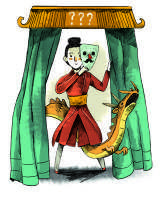
인어공주모두를 홀리는 노래 · 트릭 시작 전
시작 플레이어가 낼 카드 종류, 즉 리드를 지정해요. 그 사람에게 지정한 종류가 없다면, 실제로 낼 수 있는 종류를 고를 때까지 다시 지정해요.
왕자가 아직 들어오지 않았다면 왕자 리드를 지정할 수 없어요. 시작자가 왕자만 가진 경우는 예외예요. 얼음 공주나 라푼젤이 이미 능력을 쓴 트릭에서는 사용할 수 없어요.
뮬란위장 · 모두 카드를 낸 뒤, 승자 결정 전
이번 트릭에 자신이 낸 카드를 손에 있는 같은 종류의 다른 카드로 바꿔요. 바뀐 카드로 승자를 판단해요.
다른 사람이 낸 카드와 바꾸는 능력이 아니에요. 개구리 카드는 이 능력으로 교환할 수 없어요.
완두콩 공주5보다 더! · 트릭 시작 전
이번 트릭에는 가능하면 5보다 높은 카드를 내야 해요. 리드 종류를 따라야 한다는 규칙은 그대로예요. 그 종류가 5 이하뿐이면 그중 한 장을 내요.
아직 왕자가 들어오지 않았고, 시작자가 가진 5 초과 카드가 왕자뿐이라면 왕자가 아닌 5 이하 카드로 시작할 수 있어요.
포카혼타스황야의 인도자 · 트릭 시작 전
이번 트릭의 시작 플레이어를 원하는 사람으로 지정해요.
인어공주나 라푼젤이 능력을 사용한 트릭에서는 사용할 수 없어요.
라푼젤고귀한 머리카락 밧줄 · 트릭 시작 전
이번 시작 플레이어가 왕자로 리드하도록 해요. 자기 자신이 시작자일 때도 사용할 수 있어요. 왕자를 갖고 있지 않다면 원하는 카드로 시작하지만 능력은 사용한 것으로 처리해요.
이 능력으로 왕자를 냈다는 이유만으로 이후 왕자 리드가 계속 허용되지는 않아요. 인어공주나 얼음 공주가 이미 능력을 쓴 트릭에서는 사용할 수 없어요.
세에라자드시장에서 물물교환 · 트릭 시작 전
다른 한 사람의 손에서 무작위 카드 한 장을 가져오고, 자기 손에서 원하는 한 장을 그 사람에게 돌려줘요. 방금 가져온 카드를 그대로 돌려줘도 돼요.
인어공주·얼음 공주·라푼젤이 이미 능력을 쓴 트릭에서는 그 트릭의 시작 플레이어를 대상으로 고를 수 없어요.
잠자는 숲속의 공주운명의 물레바퀴 · 트릭 시작 전
자신을 포함한 모두가 손에서 한 장을 골라 뒷면으로 당신에게 줘요. 당신은 모인 카드를 혼자 모두 확인하고 한 장을 가진 뒤, 남은 카드를 다른 사람들에게 한 장씩 원하는 대로 나눠줘요.
인어공주·얼음 공주·라푼젤이 이미 능력을 쓴 트릭에서 자신이 시작 플레이어라면 사용할 수 없어요.
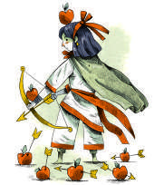
백설공주일곱 난쟁이 · 자기 카드를 낼 때
지금 내는 카드의 원래 숫자가 7 이하라면, 이번 트릭에서 그 숫자를 0으로 취급하게 해요.
리드 종류를 따라야 하는 규칙은 그대로예요. 완두콩 공주가 적용 중이라면 정상적으로 낼 수 있는 6이나 7을 0으로 만들 수 있어요. 라운드 말 점수는 카드의 원래 숫자와 라운드 규칙으로 계산해요.
엄지공주모르는 게 약이다 · 자기 카드를 낼 때
왕자와 개구리를 제외한 카드를 내면서, 리드와 다른 종류의 카드여도 낼 수 있어요. 원래 리드 종류를 갖고 있어도 사용할 수 있어요.
자신이 시작자이고 인어공주나 라푼젤이 낼 종류를 지정했다면 사용할 수 없어요.
특별한 공주 ‘카르메시나’ 카드를 따로 가지고 있다면
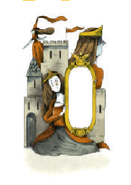
반사: 이번 게임에 등장한 다른 공주 하나의 능력을 복제해 사용해요. 라운드마다 다른 공주를 골라도 되지만, 한 트릭에 같은 능력을 두 번 쓸 수는 없어요. 같은 능력을 먼저 선언한 쪽이 사용해요.
공식 설명서에서 별도로 소개하는 특별한 공주예요. 기본 공주 12종과 구분했으며, 해당 카드를 가지고 있을 때만 참고해요.
06. 라운드 카드 26종 · a부터 z까지
라운드 카드는 매번 적용되는 특수 규칙이에요. 아래는 효과를 찾기 위한 요약이고, 라운드 시작의 교환 장수·방향은 실제 카드 아래 화살표를 따라요. 그림은 공식 설명서의 해당 카드 일러스트예요.
규칙 우선순위: 공주 능력 → 라운드 카드 → 기본 규칙. 다만 공주 간 금지 조합과 각 카드의 예외는 함께 적용해요.
26종을 볼 수 있어요.
일치하는 라운드 카드가 없어요. 다른 이름이나 효과로 찾아보세요.
a 옛날 옛적에…라운드 규칙 · 눌러서 효과 보기
추가 효과 없이 기본 규칙으로 진행해요.
기본 규칙을 처음 익힐 때 보기 좋은 카드예요.
b 무도회에 늦었어!라운드 규칙 · 눌러서 효과 보기
카드 교환을 끝낸 뒤, 첫 트릭 전에 손에서 한 장을 골라 공주 카드 아래에 뒷면으로 따로 둬요. 그 카드는 마지막 트릭에 사용해요.
잠자는 숲속의 공주와 세에라자드는 마지막 트릭에서 능력을 사용할 수 없어요.
c 마법의 콩라운드 규칙 · 눌러서 효과 보기
이번 트릭에 낼 수 있는 리드 종류 카드 중 가장 높은 카드 또는 가장 낮은 카드만 고를 수 있어요. 시작자에게도 적용해요.
리드 종류가 없어 프리라면, 손 전체에서 가장 높은 카드 또는 가장 낮은 카드만 낼 수 있어요.
d 세 번째 여인라운드 규칙 · 눌러서 효과 보기
숫자 3 카드마다 -3점을 받아요. 왕자 3은 기본 +1점도 있으므로 합계 -2점이에요.
라운드 점수가 0 아래로 내려가도 괜찮아요. 백설공주가 트릭 중 3을 0으로 썼어도 점수 계산 때는 3 카드로 봐요.
e 중매결혼라운드 규칙 · 눌러서 효과 보기
이번 라운드에 트릭을 단 한 번도 이기지 못한 사람은 점수 계산 때 +5점을 추가해요.
벌점을 피하려고 무조건 모든 트릭을 피하는 것만이 좋은 선택은 아니에요.
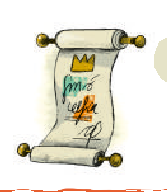
f 칙령라운드 규칙 · 눌러서 효과 보기
여왕이 다른 종류보다 강한 으뜸패가 돼요. 여왕이 한 장이라도 나왔다면 여왕 중 숫자가 가장 큰 카드가 이겨요.
여왕을 가지고 있다고 리드를 무시하고 낼 수 있는 것은 아니에요. 낼 때는 기본 규칙을 따라요.
g 신부의 들러리라운드 규칙 · 눌러서 효과 보기
리드 종류의 카드 중 두 번째로 높은 숫자가 트릭을 가져가요.
시작자 이외의 모두가 프리라면 시작자가 이겨요.
h 유리처럼 투명한라운드 규칙 · 눌러서 효과 보기
라운드 시작의 카드 교환 뒤, 각자 한 종류를 정해 그 종류의 손패 전부를 자기 앞에 공개해요. 손에 없는 종류는 고를 수 없어요.
공개한 카드는 손패처럼 낼 수 있고 내내 공개 상태로 둬요. 무작위 카드로 취급할 수 없으므로 얼음 공주·세에라자드의 무작위 선택 대상이 아니에요. 그 종류를 새로 받으면 손으로 가져와요.
i 가장무도회라운드 규칙 · 눌러서 효과 보기
시작자만 앞면으로 내고, 나머지는 리드를 지켜 뒷면으로 내요. 모두 낸 뒤 동시에 공개해서 승자를 정해요.
백설공주나 엄지공주는 능력 사용을 선언하되 카드 자체는 공개하지 않아요. 뮬란은 모두 공개한 뒤 능력을 써요.
j 동물들의 복수라운드 규칙 · 눌러서 효과 보기
가져온 동물 친구 카드마다 +1점이에요. 원래 +5점인 개구리는 합계 +6점이에요.
일반 동물 친구도 피해야 할 카드가 돼요.
k 의자 뺏기 게임라운드 규칙 · 눌러서 효과 보기
매 트릭이 끝날 때마다 모두 손에서 한 장을 골라 오른쪽 사람에게 동시에 뒷면으로 넘겨요.
다음 트릭 시작 전에 쓰는 공주 능력은 이 카드 교환을 먼저 마친 뒤 적용해요.
l 자매결연라운드 규칙 · 눌러서 효과 보기
시작자 이외의 플레이어 가운데, 리드 종류 카드의 숫자가 시작 카드 숫자와 가장 차이 나는 사람이 이겨요. 차이가 같으면 더 높은 숫자, 숫자도 같으면 먼저 낸 카드가 이겨요.
다른 사람 모두 리드 종류가 없다면 그들의 다른 종류 카드도 비교해요. 시작자는 이길 수 없다는 공식 FAQ 정정을 반영했어요. 신데렐라를 사용했다면 같은 차이일 때 더 낮은 숫자가 우선해요.
m 뒤풀이라운드 규칙 · 눌러서 효과 보기
받은 카드를 절반으로 나눠, 절반은 손에 들고 나머지는 공주 카드 아래에 뒷면으로 둬요. 손에 든 절반을 먼저 모두 쓴 다음, 따로 둔 나머지를 들어 사용해요.
공주 능력은 현재 손에 든 카드에만 적용해요. 한 라운드 한 번이라는 사용 횟수는 늘지 않아요.
n 엄청 중요한 날에 늦었어!라운드 규칙 · 눌러서 효과 보기
각자 손에 카드가 3장씩 남으면 라운드를 끝내요. 남은 카드도 자신이 획득한 카드처럼 취급해 점수를 계산해요.
마지막 세 장의 벌점을 다른 사람에게 넘기지 못한 채 정산할 수 있어요.
o 결혼 선물라운드 규칙 · 눌러서 효과 보기
매 트릭 전에 모두 손에서 한 장을 추가로 골라 뒷면으로 내려놔요. 트릭 승자는 낸 카드와 이 선물 카드까지 모두 가져가요.
트릭 수가 절반으로 줄어요. 이 라운드에는 파티 여왕의 반란을 선언할 수 없어요. 잠자는 숲속의 공주 능력은 선물을 내려놓기 전에 사용하고, 앨리스는 실제로 낸 카드만 다시 나눠요.
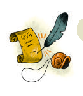
p 마녀와의 거래라운드 규칙 · 눌러서 효과 보기
트릭 승자는 손에서 한 장을 공개하고, 방금 얻은 트릭의 카드 한 장과 교환할 수 있어요.
이번 트릭에 자신이 냈던 카드를 도로 가져오는 것은 금지예요. 뮬란이 승리했다면 뮬란 능력과 이 효과를 각각 구분해 처리해요.
q 눈 가리고 술래잡기라운드 규칙 · 눌러서 효과 보기
받은 카드를 둘로 나눠 절반을 손에, 나머지는 공주 카드 아래에 둬요. 손의 절반을 다 쓰면, 따로 둔 카드를 오른쪽 사람에게 넘겨 그 사람이 마저 사용해요.
공주 능력은 현재 손에 든 카드에만 적용해요. 공주 능력을 두 번 쓸 수 있게 되는 것은 아니에요.
r 독사과라운드 규칙 · 눌러서 효과 보기
프리로 다른 종류를 낸 사람이 트릭을 이겨요. 여러 사람이 프리라면 그중 숫자가 가장 높은 카드가 이겨요.
숫자도 같으면 먼저 낸 사람이 이겨요. 프리가 없다면 기본 승자 판정을 따라요.
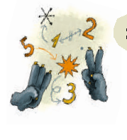
s 홀짝라운드 규칙 · 눌러서 효과 보기
리드 종류와 더불어 시작 카드의 홀수·짝수 분류도 따라야 해요. 둘 다 맞출 수 없다면 리드 종류를 먼저 지켜요.
리드가 없어 프리여도 홀짝은 가능한 한 따라요. 백설공주도 원래 카드의 홀짝을 지키고, 완두콩 공주도 5 초과 조건을 적용하면서 홀짝을 지켜요.
t 솔로 요정라운드 규칙 · 눌러서 효과 보기
가져온 요정 카드 한 장마다 -1점이에요.
라운드 점수가 음수가 될 수 있어요.
u 왕자는 벨을 두 번 울린다라운드 규칙 · 눌러서 효과 보기
모두 한 장씩 낸 뒤, 같은 리드를 따르며 한 장씩 더 내요. 각자 낸 두 장 중 리드 종류 카드의 숫자만 합해 가장 큰 합계가 이겨요.
합계가 같으면 더 높은 리드 카드를 낸 사람이 이겨요. 신데렐라는 낮은 합계가 이기게 하고, 앨리스는 모인 카드를 두 장씩 다시 나눠요.
v 한밤중의 변신라운드 규칙 · 눌러서 효과 보기
요정은 어떤 종류 대신으로도 낼 수 있는 만능 카드가 돼요. 리드 종류와 요정 카드 가운데 가장 높은 숫자가 이겨요.
숫자가 같으면 먼저 낸 카드가 이겨요. 첫 카드가 요정이면 요정이 리드예요. 요정이 남아 있다면 리드를 맞출 수 있으므로 프리가 아니에요. 인어공주·라푼젤이 실제 종류를 지정했다면 요정으로 대신할 수 없어요.
w 부케 던지기!라운드 규칙 · 눌러서 효과 보기
리드가 없어서 다른 종류를 내면 그 종류가 즉시 새로운 리드가 돼요. 다음 사람은 가능하면 새 리드를 따라야 해요.
트릭의 마지막 리드 종류 중 숫자가 가장 큰 카드가 이겨요.
x 반대로라운드 규칙 · 눌러서 효과 보기
트릭에 6이 나올 때마다 숫자의 강약을 한 번씩 뒤집어요. 6이 두 장이면 두 번 뒤집혀 원래대로 돌아와요.
신데렐라가 먼저 강약을 뒤집었다면 그 상태에서 시작해 6마다 다시 뒤집어요. 뮬란으로 6이 추가되거나 빠지면 승자 판정을 다시 계산해요.
y 화장실 타임라운드 규칙 · 눌러서 효과 보기
지금까지 누적 점수가 가장 높은 사람을 제외하고, 왕자 카드로 받는 점수를 두 배로 계산해요.
누적 최고점 동점자들은 모두 제외해요. 왕자 점수에 적용하는 효과라서 개구리의 기본 +5점은 그대로예요.
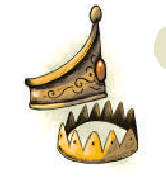
z 덫 설치라운드 규칙 · 눌러서 효과 보기
가져온 왕자와 여왕 중 숫자가 같은 한 쌍마다 -3점이에요. 숫자가 맞지 않는 왕자는 한 장당 +2점이에요.
짝이 없는 여왕은 0점이에요. 개구리는 기본 규칙대로 +5점으로 계산해요.
자주 헷갈리는 규칙
여왕이나 왕자는 다른 종류보다 무조건 강한가요?
기본 규칙은 리드 종류만 승자를 가려요. 같은 리드 안에서 숫자를 비교해요. 여왕 으뜸패나 요정 만능 같은 효과는 해당 라운드 카드가 있을 때만 적용해요.
개구리 8이 나오면 즉시 게임이 끝나나요?
아니요. 개구리는 동물 친구 8 카드로 정상적으로 내고 트릭에 포함해요. 가져간 사람에게 라운드 끝 +5점이 생기는 것이에요.
왕자를 리드하기 전에는 왕자를 아예 못 내나요?
왕자로 시작하는 것만 제한돼요. 다른 종류를 따라야 하는데 그 종류가 없다면 프리로 왕자를 낼 수 있고, 그것으로 이후 왕자 리드가 열려요. 라푼젤 능력이나 ‘마녀와의 거래’로 왕자가 등장한 것만으로는 이 제한이 계속 풀리지 않아요.
파티 여왕의 반란은 0점으로 만드는 규칙인가요?
이 안내가 기준으로 삼은 디럭스 한글판에서는 그 라운드 -10점이에요. 다른 판본이나 모임에서 쓰는 규칙과 섞지 않도록, 함께 시작할 때 판본을 확인해요.
음수 점수를 받아도 되나요?
돼요. 반란, ‘세 번째 여인’, ‘솔로 요정’, ‘덫 설치’ 같은 효과로 점수가 0 아래로 내려갈 수 있어요.
공주 능력을 안 썼다면 다음 라운드에 두 번 쓰나요?
아니요. 매 라운드 최대 한 번이며 사용하지 않은 횟수를 모아 둘 수 없어요.
설명이 충돌하는 것처럼 보일 때는 어떻게 하나요?
공주 능력, 라운드 카드, 기본 규칙의 우선순위를 먼저 보고 각 능력의 금지 조합을 확인해요. 특히 뮬란·신데렐라처럼 판정을 바꾸는 카드의 세부 상호작용은 아래 공식 설명서와 디럭스 공식 FAQ에서 확인할 수 있어요.